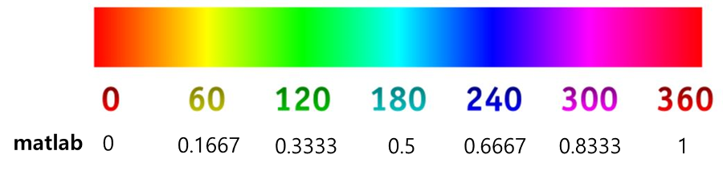

Python으로 영상과 색 다루기
clear variables;
이미지 파일 처리
img_rgb = imread('Lenna.png');
disp('Display image')
imshow(img_rgb)
이미지 흑백화
img_gray = rgb2gray(img_rgb);
disp('Display grayscale image')
imshow(img_gray)
흑백 이미지 매트릭스 산술 연산
disp('Display brighter grayscale image')
imshow(img_gray+100)
RGB 이미지 각 채널 분리
r = img_rgb(:, :, 1);
g = img_rgb(:, :, 2);
b = img_rgb(:, :, 3);
disp('Display r-channel grayscale image')
imshow(r)
disp('Display g-channel grayscale image')
imshow(g)
disp('Display b-channel grayscale image')
imshow(b)
RGB 이미지 매트릭스 산술 연산
img_rgb_r = img_rgb;
img_rgb_g = img_rgb;
img_rgb_b = img_rgb;
img_rgb_r(:, :, 1) = img_rgb_r(:, :, 1) + 100;
img_rgb_g(:, :, 2) = img_rgb_g(:, :, 2) + 100;
img_rgb_b(:, :, 3) = img_rgb_b(:, :, 3) + 100;
disp('Display r-channel reinforced image')
imshow(img_rgb_r)
disp('Display g-channel reinforced image')
imshow(img_rgb_g)
disp('Display b-channel reinforced image')
imshow(img_rgb_b)
RGB 이미지 매트릭스 요소 연산
img_rgb_1 = img_rgb;
img_rgb_1(1:256, 1:256, 1) = 255; % 2사분면, R채널
img_rgb_1(1:256, 256:end, 2) = 255; % 1사분면, G채널
img_rgb_1(256:end, 256:end, 3) = 255; % 4사분면, B채널
disp('Display element-wise edited image')
imshow(img_rgb_1)
색 공간 변환 (RGB, HSV)
img_hsv = rgb2hsv(img_rgb);
disp('Display hsv transformed image')
imshow(img_hsv)
h = img_hsv(:, :, 1);
s = img_hsv(:, :, 2);
v = img_hsv(:, :, 3);
disp('Display h-channel grayscale image')
imshow(h)
disp('Display s-channel grayscale image')
imshow(s)
disp('Display v-channel grayscale image')
imshow(v)
HSV 공간에서 특정 색 영역 추출하기

img_h_cut_hsv = img_hsv.*(h>0.67).*(h<0.83); % purple
img_h_cut_rgb = hsv2rgb(img_h_cut_hsv);
disp('Display purple area of the image')
imshow(img_h_cut_rgb)
이미지 변형하기
img_zoom_out = imresize(img_rgb, 0.5);
disp('Display 50% zoom out image');
imshow(img_zoom_out)
img_trans = imresize(img_rgb, [100 50]);
disp('Display transformed image');
imshow(img_trans)
img_rotate1 = imrotate(img_rgb, 30);
disp('Display rotated image');
imshow(img_rotate1)
img_rotate2 = imrotate(img_rgb, 30, 'crop');
disp('Display rotated and cropped image');
imshow(img_rotate2)
img_flip1 = flip(img_rgb, 1);
img_flip2 = flip(img_rgb, 2);
disp('Display vertically flipped image')
imshow(img_flip1)
disp('Display horizontally flipped image')
imshow(img_flip2)